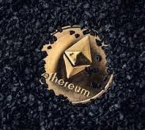
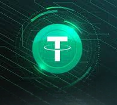

Bitcoin |
|||
|---|---|---|---|
| According to Investopedia, it was designed to act as money and/or a form of payment outside any person, group, or entity's control. This, in turn, removes the need for trusted third-party involvement (e.g., a mint or bank) in financial transactions. It was first introduced in 2009 by an anonymous developer or group of developers using the name Satoshi Nakamoto and has since become the most well-known and largest cryptocurrency in the world. | |||
Ethereum |
|||
|  | Research from Investopedia says that it's a decentralized global software platform powered by blockchain technology and is most commonly known by developers for its blockchain and decentralized finance application development use. Its also designed to pay for work done supporting the blockchain and tangible goods and services if accepted. | ||
Teather |
|||
|  | Described by Investopedia, this crypto currency is pegged to the U.S. dollar, meaning it's a stablecoin that fluctuate in value with the U.S. dollar and backed by its dollar reserves. As of March 2024, USDT was the third-largest cryptocurrency after Bitcoin (BTC) and Ethereum (ETH) and the largest stablecoin with a market capitalization of ~$99 billion and in 2023 and early 2024, was accounted for most of the exchanges out of other cryptocurrencies by volume. |
References |
|---|
Bitcoin: Team, I. (2024, September 7). What is Bitcoin? How to buy, mine, and use it. Investopedia. https://www.investopedia.com/terms/b/bitcoin.asp.
|